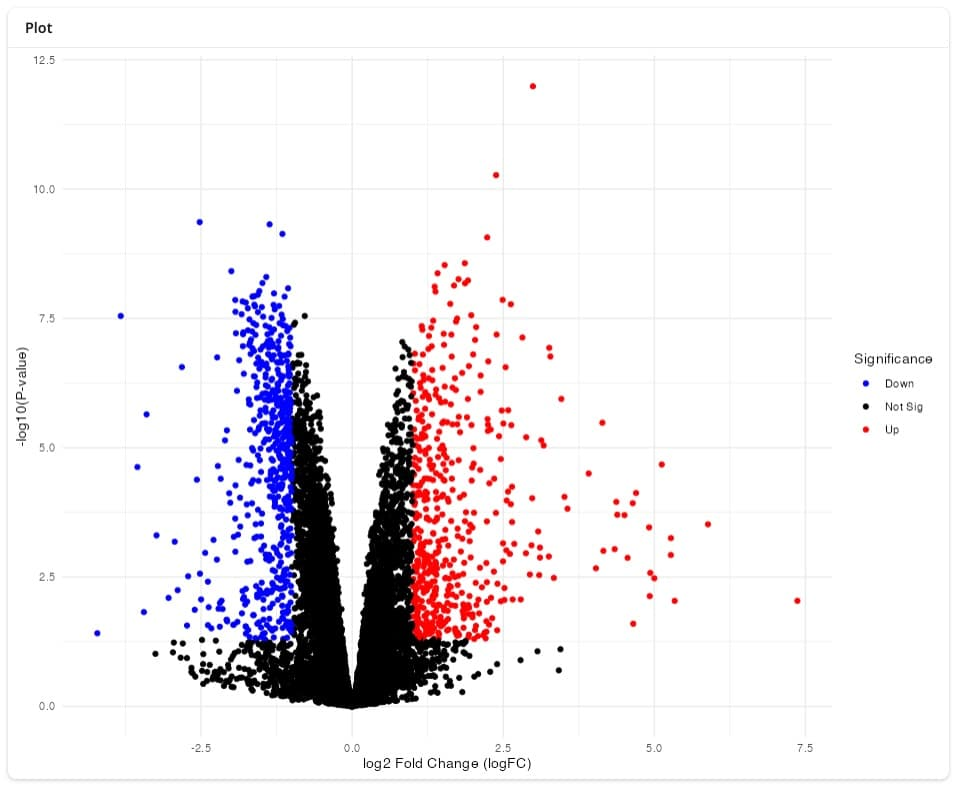
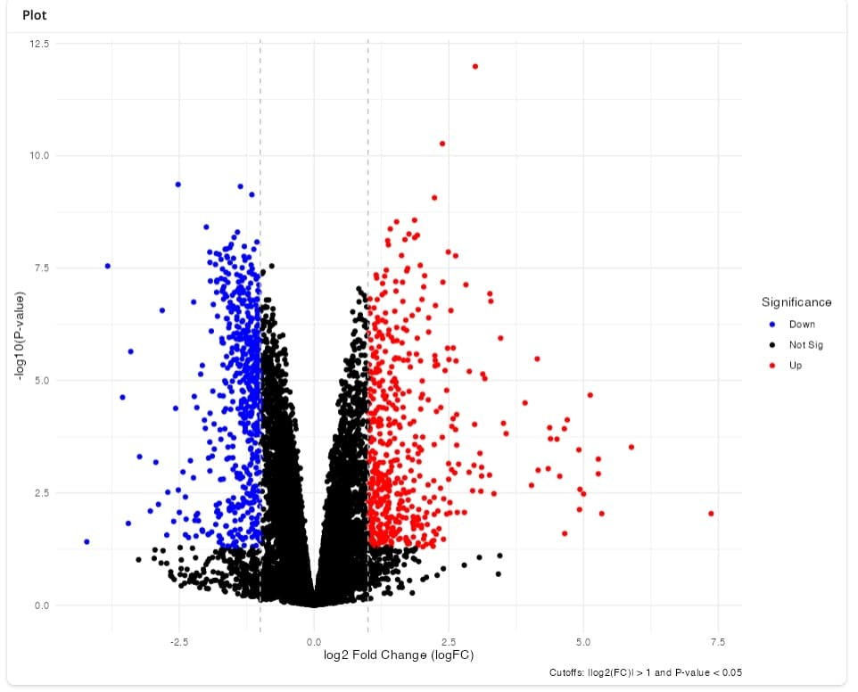
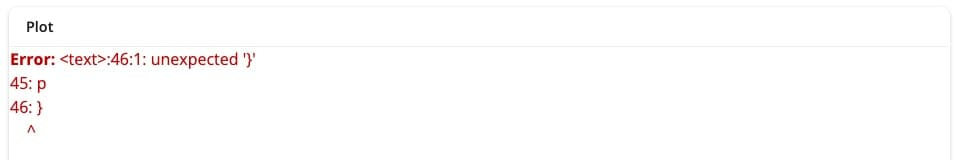
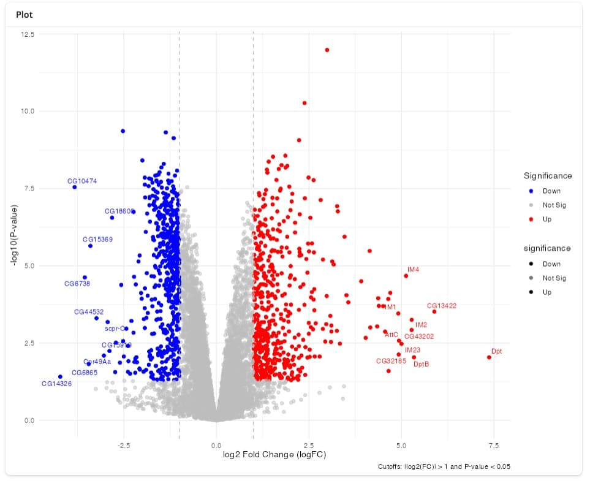
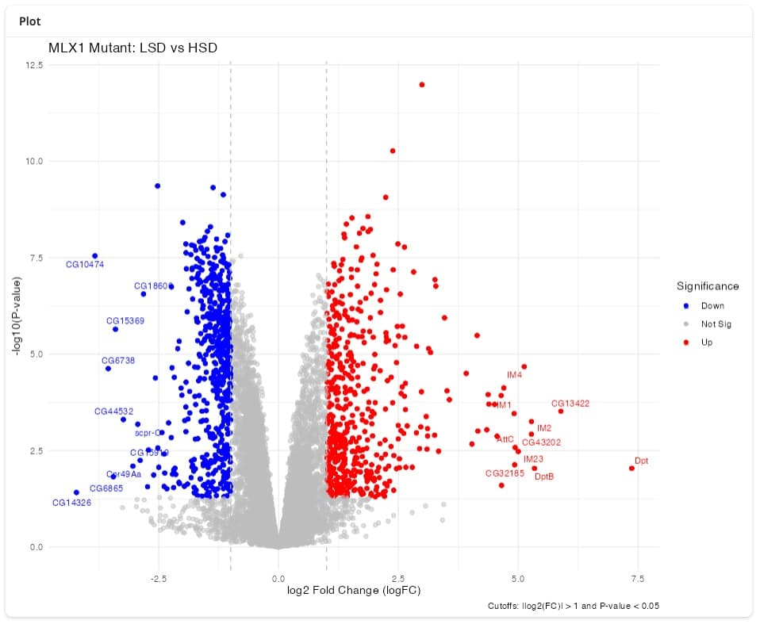
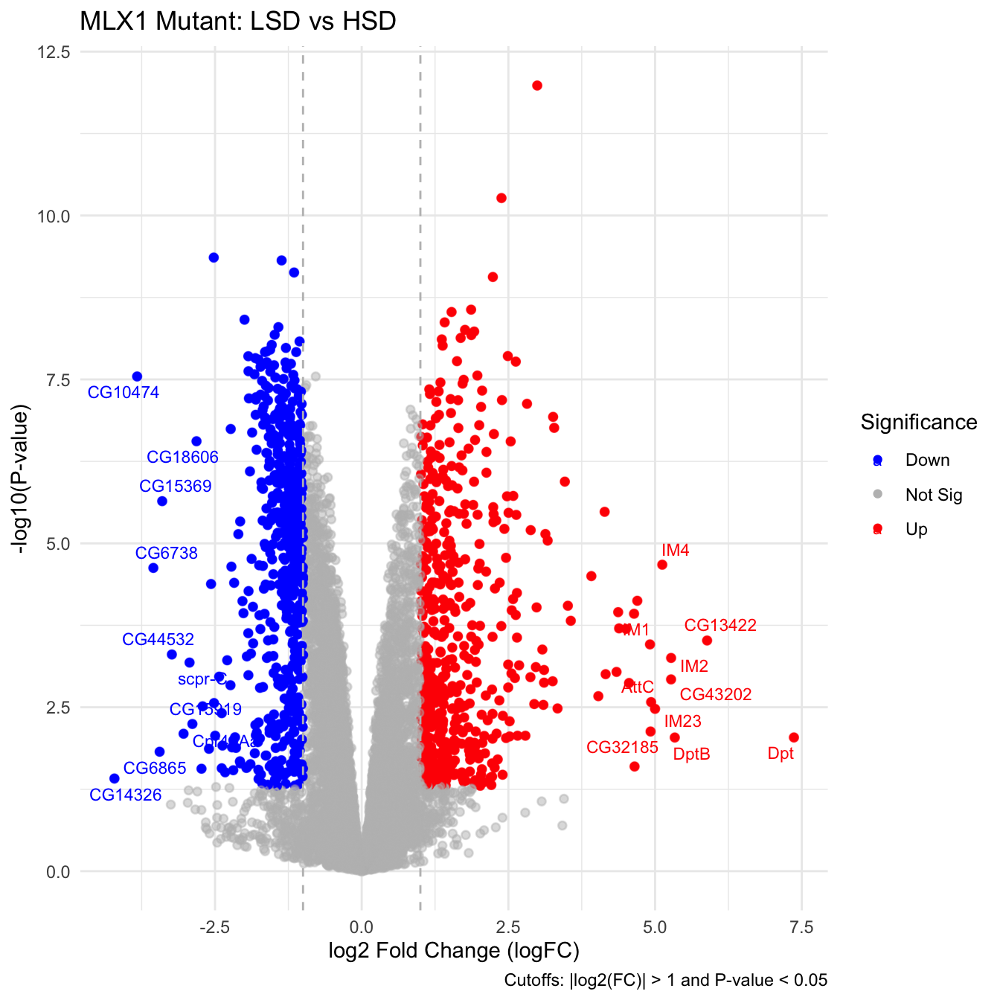

library(fs)
library(readxl)tl;dr
- Today I experimented with the
ggbot2R package, which connects a shiny app to openAI’sgpt-4.1model to generate plots in R. - After some experimentation, e.g. making sure that the required R packages were attached to the session, I was able to create a high-quality volcano plot, similar to a version I coded myself.
- I have lots of concerns about the use of LLMs, ranging from their environmental impact, illegal use of copyrighted material for training, effect on communities of practice, surveillance and privacy, etc.
ggbot2is a small R package, designed to demonstrate what is possible rather than to be used day-to-day. It highlights that a thoughtful combination of natural-language processing and voice recognition can lower the barrier of entry for data analysis and visualization. (I appreciate the ability to inspect (and document) the code that generates the figure.)
ggbot2
Joe Cheng, Sara Altman and Davis Vaughan showed off their ggbot2 R package at the recent Posit conference to demonstrate how multiple R packages from the tidyverse can be combined into a web application that generates plots based on voice commands.
It caught my attention after I read Stephen Turner’s blog post, and I decided to see how difficult it would be to recreate a volcano plot that I had generated previously.
Example data from Mattila et al, 2015
The data is from a differential expression analysis published by Mattila et al, 2015, who compared gene expression profiles of Drosophila larvae grown on a diet rich in protein but low in sugar (LSD) with those exposed to a high-sugar diet (HSD) for 8 hours.
The results (p-values, log2 fold changes, etc) are available in supplementary table S2 in the form of an excel file. Let’s download it and extract only the comparison of interest:
df <- local({
kUrl <- paste0(
"https://drive.google.com/uc?export=download&",
"id=1xWVyoSSrs4hoqf5zVRgGhZPRjNY_fx_7"
)
temp_file <- tempfile(fileext = ".xlsx")
download.file(kUrl, temp_file)
readxl::read_excel(temp_file, sheet = "mlx1 mutant LSD vs. HSD", skip = 3)
})
head(df)# A tibble: 6 × 7
Symbol logFC AveExpr t P.Value adj.P.Val B
<chr> <dbl> <dbl> <dbl> <dbl> <dbl> <dbl>
1 Dpt 7.37 -0.875 3.04 0.00912 0.0362 -3.23
2 CG13422 5.89 0.152 4.80 0.000302 0.00255 0.175
3 DptB 5.34 0.818 3.04 0.00913 0.0362 -3.23
4 IM2 5.27 0.825 4.47 0.000558 0.00417 -0.444
5 CG43202 5.27 -2.34 4.08 0.00119 0.00746 -1.20
6 IM4 5.12 3.08 6.33 0.0000211 0.000346 2.88 ggbot2 relies on openAI’s GPT-4.1 model to transcribe voice into text and to generate code. To use it, I created an openAI account and created an API key that are available in an .Renviron file within my R project.
library(ggbot2)Loading required package: ggplot2# optional, just making sure my API keys are found
got_api_keys <- ggbot2:::ensure_openai_api_key()
got_api_keys[1] TRUEGreat, with my API key in place, I can pass the df data.frame to the ggbot function, which launches a shiny app within my RStudio IDE.
To interact with the shiny app, I opened it in my internet browser by clicking Open in Browser. Then I could activate the microphone button at the bottom of the page to record & transmit my instructions.
My first attempts at creating a volcano plot were unsuccessful, because the LLM attempted to use functions from R packages that were not installed (or attached) to my R session, e.g. it attempted to use functions from the dplyr R package. Later, when I instructed the model to add non-overlapping text labels, it attempted to use the ggrepel package. I learned through trial and error to attach these packages to the R session before calling ggbot().
library(dplyr)
Attaching package: 'dplyr'The following objects are masked from 'package:stats':
filter, lagThe following objects are masked from 'package:base':
intersect, setdiff, setequal, unionlibrary(ggrastr)
library(ggrepel)
ggbot2::ggbot(df)Shiny applications not supported in static R Markdown documents
With these dependencies in place, I was able to iteratively create a plot that would make many of my collaborators happy, as well as the code that generated it.
Here are my prompts and the results I got:
This is a table with differential gene expression results. Please create a volcano plot and highlight significantly up- and down-regulated genes in red and blue, respectively.

> Please add vertical dashed lines to indicate the log2 cutoff, and add a caption that explains which cutoffs were applied.
Please label top 10 up- and down-regulated genes, respectively, and make sure the labels don’t overlap.
Please change the color of the non-significant points to grey, and make them semi-transparent.

That didn’t work, please try again.

Please remove the second legend that shows the transparency of the three categories.
Please add the title “Mlx1 mutant LSD vs. HSD”

Instead of plotting all of the points, please use the ggrastr package to create a rasterized image instead.
Here is the final code, and its output (rendered in my R session, not within the shiny app) 1
library(ggplot2)
library(ggrepel)
library(ggrastr)
# Define significance thresholds
logFC_threshold <- 1
pvalue_threshold <- 0.05
# Create a new column for significance status
df <- df %>%
mutate(significance = case_when(
logFC >= logFC_threshold & P.Value <= pvalue_threshold ~ 'Up',
logFC <= -logFC_threshold & P.Value <= pvalue_threshold ~ 'Down',
TRUE ~ 'Not Sig'
))
# Get top 10 up-regulated genes
up_genes <- df %>%
filter(significance == 'Up') %>%
arrange(-logFC) %>%
head(10)
# Get top 10 down-regulated genes
down_genes <- df %>%
filter(significance == 'Down') %>%
arrange(logFC) %>%
head(10)
# Combine top up and down genes
top_genes <- bind_rows(up_genes, down_genes)
# Generate the volcano plot using rasterized points, remove alpha legend, and add title
p <- ggplot(df, aes(x = logFC, y = -log10(P.Value), color = significance)) +
geom_point_rast(aes(alpha = significance)) +
scale_color_manual(values = c('Up' = 'red',
'Down' = 'blue',
'Not Sig' = 'gray')) +
scale_alpha_manual(values = c('Up' = 1,
'Down' = 1,
'Not Sig' = 0.5), guide = 'none') +
geom_vline(xintercept = c(-logFC_threshold, logFC_threshold),
linetype = 'dashed', color = 'gray') +
geom_text_repel(data = top_genes, aes(label = Symbol), size = 3) +
labs(
title = 'MLX1 Mutant: LSD vs HSD',
x = 'log2 Fold Change (logFC)',
y = '-log10(P-value)',
color = 'Significance',
caption = paste('Cutoffs: |log2(FC)| >', logFC_threshold,
'and P-value <', pvalue_threshold)
) +
theme_minimal()
p
Does an experienced analyst need to use multiple calls to an LLM to generate this volcano plot (at the expense of water, electricity and funds)? No, of course not.
But in my work as a Computational Biologist, I interact with many colleagues for whom writing code is a barrier and who rely on me to tweak figures e.g. for publications. They already chat with LLMs, and would likely appreciate being able to talk to them as well.
ggbot2 is an instructive example how these tools can be integrated into the stack of tools I use, within an environment with defined dependencies that can be recorded and audited (e.g. in the session information below).
For professional use, it would be great to interact with either a local LLM, avoiding any data transfer, or use an LLM provider that is securely integrated into my workplace.
But I have to admit, the ability to create and modify a plot simply by talking to my computer is wondrous - even if I will stick to coding for the foreseeable future.
Reproducibility
NoteSession Information ℹ️
sessioninfo::session_info()─ Session info ───────────────────────────────────────────────────────────────
setting value
version R version 4.5.1 (2025-06-13)
os macOS Sequoia 15.6.1
system aarch64, darwin20
ui X11
language (EN)
collate en_US.UTF-8
ctype en_US.UTF-8
tz America/Los_Angeles
date 2025-09-27
pandoc 3.6.3 @ /Applications/RStudio.app/Contents/Resources/app/quarto/bin/tools/aarch64/ (via rmarkdown)
quarto 1.8.21 @ /usr/local/bin/quarto
─ Packages ───────────────────────────────────────────────────────────────────
! package * version date (UTC) lib source
P base64enc 0.1-3 2015-07-28 [?] CRAN (R 4.5.0)
P beeswarm 0.4.0 2021-06-01 [?] CRAN (R 4.5.0)
P bslib 0.9.0 2025-01-30 [?] CRAN (R 4.5.0)
P cachem 1.1.0 2024-05-16 [?] CRAN (R 4.5.0)
P Cairo 1.6-5 2025-08-20 [?] CRAN (R 4.5.0)
P cellranger 1.1.0 2016-07-27 [?] CRAN (R 4.5.0)
P cli 3.6.5 2025-04-23 [?] CRAN (R 4.5.0)
P coro 1.1.0 2024-11-05 [?] CRAN (R 4.5.0)
P digest 0.6.37 2024-08-19 [?] CRAN (R 4.5.0)
P dplyr * 1.1.4 2023-11-17 [?] CRAN (R 4.5.0)
P ellmer 0.3.2 2025-09-03 [?] CRAN (R 4.5.0)
P evaluate 1.0.5 2025-08-27 [?] CRAN (R 4.5.0)
P farver 2.1.2 2024-05-13 [?] CRAN (R 4.5.0)
P fastmap 1.2.0 2024-05-15 [?] CRAN (R 4.5.0)
P fontawesome 0.5.3 2024-11-16 [?] CRAN (R 4.5.0)
P fs * 1.6.6 2025-04-12 [?] CRAN (R 4.5.0)
P generics 0.1.4 2025-05-09 [?] CRAN (R 4.5.0)
P ggbeeswarm 0.7.2 2023-04-29 [?] CRAN (R 4.5.0)
P ggbot2 * 0.0.0.9000 2025-09-27 [?] Github (tidyverse/ggbot2@073028e)
P ggplot2 * 4.0.0 2025-09-11 [?] CRAN (R 4.5.0)
P ggrastr * 1.0.2 2023-06-01 [?] CRAN (R 4.5.0)
P ggrepel * 0.9.6 2024-09-07 [?] CRAN (R 4.5.0)
P glue 1.8.0 2024-09-30 [?] CRAN (R 4.5.0)
P gtable 0.3.6 2024-10-25 [?] CRAN (R 4.5.0)
P htmltools 0.5.8.1 2024-04-04 [?] CRAN (R 4.5.0)
P httpuv 1.6.16 2025-04-16 [?] CRAN (R 4.5.0)
P httr 1.4.7 2023-08-15 [?] CRAN (R 4.5.0)
P httr2 1.2.1 2025-07-22 [?] CRAN (R 4.5.0)
P jquerylib 0.1.4 2021-04-26 [?] CRAN (R 4.5.0)
P jsonlite 2.0.0 2025-03-27 [?] CRAN (R 4.5.0)
P knitr 1.50 2025-03-16 [?] CRAN (R 4.5.0)
P labeling 0.4.3 2023-08-29 [?] CRAN (R 4.5.0)
P later 1.4.4 2025-08-27 [?] CRAN (R 4.5.0)
P lifecycle 1.0.4 2023-11-07 [?] CRAN (R 4.5.0)
P magrittr 2.0.4 2025-09-12 [?] CRAN (R 4.5.0)
P memoise 2.0.1 2021-11-26 [?] CRAN (R 4.5.0)
P mime 0.13 2025-03-17 [?] CRAN (R 4.5.0)
P pillar 1.11.1 2025-09-17 [?] CRAN (R 4.5.0)
P pkgconfig 2.0.3 2019-09-22 [?] CRAN (R 4.5.0)
P promises 1.3.3 2025-05-29 [?] CRAN (R 4.5.0)
P R6 2.6.1 2025-02-15 [?] CRAN (R 4.5.0)
P rappdirs 0.3.3 2021-01-31 [?] CRAN (R 4.5.0)
P RColorBrewer 1.1-3 2022-04-03 [?] CRAN (R 4.5.0)
P Rcpp 1.1.0 2025-07-02 [?] CRAN (R 4.5.0)
P readxl * 1.4.5 2025-03-07 [?] CRAN (R 4.5.0)
P renv 1.1.5 2025-07-24 [?] CRAN (R 4.5.0)
P rlang 1.1.6 2025-04-11 [?] CRAN (R 4.5.0)
P rmarkdown 2.29 2024-11-04 [?] CRAN (R 4.5.0)
P S7 0.2.0 2024-11-07 [?] CRAN (R 4.5.0)
P sass 0.4.10 2025-04-11 [?] CRAN (R 4.5.0)
P scales 1.4.0 2025-04-24 [?] CRAN (R 4.5.0)
P sessioninfo 1.2.3 2025-02-05 [?] CRAN (R 4.5.0)
P shiny 1.11.1 2025-07-03 [?] CRAN (R 4.5.0)
P shinychat 0.2.0 2025-05-16 [?] CRAN (R 4.5.0)
P shinyrealtime 0.1.0.9000 2025-09-27 [?] Github (posit-dev/shinyrealtime@a0a232a)
P tibble 3.3.0 2025-06-08 [?] CRAN (R 4.5.0)
P tidyselect 1.2.1 2024-03-11 [?] CRAN (R 4.5.0)
P utf8 1.2.6 2025-06-08 [?] CRAN (R 4.5.0)
P vctrs 0.6.5 2023-12-01 [?] CRAN (R 4.5.0)
P vipor 0.4.7 2023-12-18 [?] CRAN (R 4.5.0)
P withr 3.0.2 2024-10-28 [?] CRAN (R 4.5.0)
P xfun 0.53 2025-08-19 [?] CRAN (R 4.5.0)
P xtable 1.8-4 2019-04-21 [?] CRAN (R 4.5.0)
P yaml 2.3.10 2024-07-26 [?] CRAN (R 4.5.0)
[1] /Users/sandmann/repositories/blog/posts/ggbot2/renv/library/macos/R-4.5/aarch64-apple-darwin20
[2] /Users/sandmann/Library/Caches/org.R-project.R/R/renv/sandbox/macos/R-4.5/aarch64-apple-darwin20/4cd76b74
* ── Packages attached to the search path.
P ── Loaded and on-disk path mismatch.
──────────────────────────────────────────────────────────────────────────────
This work is licensed under a Creative Commons Attribution 4.0 International License.
Footnotes
As will most LLM setups, every
ggbot2session will yield slightly different results, so your mileage will vary.↩︎